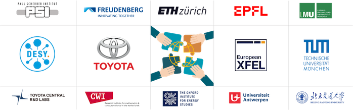
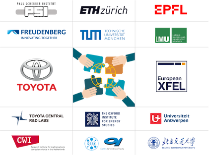

研究進捗

研究進捗
学術界から産業界まで、クリーンで効率的なエネルギーと低炭素でインテリジェントな交通分野に注力し、分野横断的な研究関心を含む：
- 新エネルギー技術、水素/光電/電池、炭素中和、低炭素インテリジェント交通
- コンピュータイメージング、X線技術、画像処理、コンピュータビジョン
- 機能性新素材、半導体、高分子、MOF、3Dプリント、材料LCA
学術論文 (引用数: 300+)
- 新エネルギー技術 / 電気化学
-
S. N. Artigas, H. Xu* [FDB], F. Mack
Use of distribution of relaxation times analysis as an in-situ diagnostic tool for water management in PEM fuel cells applications [J]
翻訳: PEM燃料電池アプリケーションにおける水管理のための現地診断ツールとしての緩和時間分布解析の利用
協力:[フロイデンベルクグループ] | 引用者:[清華大学]
2024 | J. Power Sources [PDF] -
H. Xu* [PSI], M. Bührer, F. Marone, Prof. T. J. Schmidt, F. N. Büchi, J. Eller
Effects of gas diffusion layer substrates on PEFC water management: Part II. In situ liquid water desaturation via evaporation [J]
翻訳: 気体拡散層基材が質子交換膜燃料電池の水管理に与える影響II：原位液体水蒸発研究
協力:[スイス光源/PSI] | 引用者:[トヨタ自動車] [ロバート・ボッシュ]
2022 | J. Electrochem. Soc. [PDF] -
S. van Rooij, M. Magnini, A. Mularczyk, H. Xu* [PSI], F. N. Büchi [PSI], Prof. S. Haussener
[EPFL]
Conductive heat transfer in partially saturated gas diffusion layers with evaporative cooling [J]
翻訳: 自蒸発冷却設計の燃料電池部分飽和ガス拡散層における伝導熱伝達研究
協力:[スイス光源/PSI] [ローザンヌ工科大学]
2022 | J. Electrochem. Soc. [PDF] -
H. Xu* [PSI], S. Nagashima [トヨタ自動車], H. Nguyen, K. Kishita, F. Marone, F. N. Büchi, J.
Eller [PSI]
Temperature dependent water transport mechanism in PEFC gas diffusion layers revealed by subsecond operando X-ray tomographic microscopy. [J]
翻訳: 亜秒間オペランドX線トモグラフィーによる質子交換膜燃料電池ガス拡散層における温度依存水輸送メカニズムの解明
協力:[トヨタ自動車] | 引用者:[ロバート・ボッシュ] [清華大学] [トロント大学]
2021 | J. Power Sources [PDF] -
H. Xu* [PSI], M. Bührer, F. Marone, Prof. T. J. Schmidt [ETH], F. N. Büchi, J. Eller
[PSI]
Effects of gas diffusion layer substrates on PEFC water management: Part I. Operando liquid water saturation and gas diffusion properties [J]
翻訳: 気体拡散層基材が質子交換膜燃料電池の水管理に与える影響I：オペランド液体水飽和度とガス拡散特性の研究
協力:[スイス光源/PSI] | 引用者:[ドイツ航空宇宙センター] [トヨタ自動車] [清華大学]
2021 | J. Electrochem. Soc. [PDF] -
C. Csoklich, H. Xu* [PSI], F. Marone, Prof. T. J. Schmidt [ETH], F. N. Büchi [PSI]
Laser Structured Gas Diffusion Layers for Improved Water Transport and Fuel Cell Performance [J]
翻訳: 水の輸送と燃料電池性能向上のためのレーザー構造化ガス拡散層
協力:[スイス光源/PSI] | 引用者:[東京工業大学] [香港科技大学] [清華大学]
2021 | ACS Appl. Energy Mater. [PDF] -
Y. Nagai [トヨタ自動車], J. Eller, T. Hatanaka, S. Yamaguchi, S. Kato, F. Marone, H. Xu* [PSI],
F. N. Büchi.
Improving water management in fuel cells through microporous layer modifications: Fast operando tomographic imaging of liquid water. [J]
翻訳: マイクロポーラス層の変更による燃料電池の水管理の改善：液体水の迅速なオペランドトモグラフィー画像化
協力:[トヨタ自動車] | 引用者:[マサチューセッツ工科大学] [ドイツ航空宇宙センター] [中国国家電力投資]
2019 | J. Power Sources [PDF]
- コンピュータイメージング / ディープラーニング
-
M. Bührer, H. Xu* [PSI], A. Hendriksend, F. N. Büchi, J. Eller, Prof. M. Stampanoni [ETH],
F. Marone [SLS]
Deep learning based classification of dynamic processes in time-resolved XTM [J]
翻訳: 深層学習に基づく時間分解X線トモグラフィ技術における動的プロセスの分類
協力:[スイス光源/PSI] [CWIアムステルダム] | 引用者:[スタンフォード大学] [アーヘン工科大学]
2021 | Scientific Reports [PDF] -
M. Bührer, H. Xu* [PSI], J. Eller, Prof. J. Sijbers, Prof. M. Stampanoni [ETH],
F. Marone
[SLS]
Unveiling water dynamics in fuel cells from time-resolved tomographic microscopy data [J]
翻訳: 時間分解トモグラフィ法による燃料電池内の水ダイナミクスの解明
協力:[スイス光源/PSI] [アントワープ大学] | 引用者:[東京大学] [トロント大学]
2021 | Scientific Reports [PDF] -
H. Xu* [PSI], M. Bührer, F. Marone, Prof. T. J. Schmidt [ETH], F. N. Büchi, J.
Eller
[ETH]
Optimal image denoising for operando XTM of liquid water in PEFC gas diffusion layers. [J]
翻訳: PEFCガス拡散層内の液体水のオペランドXTMに対する最適な画像ノイズ除去
協力:[スイス光源/PSI] | 引用者:[中国科学院大連化学物理研究所] [トロント大学] [ロンドン大学]
2020 | J. Electrochem. Soc. [PDF] -
H. Xu* [PSI], F. Marone, S. Nagashima, H. Nguyen, K. Kishita, F. N. Büchi, J.
Eller
(Invited) Exploring sub-second and sub-micron XTM imaging of liquid water in PEFC GDLs.[J]
翻訳: (招待論文) PEFCガス拡散層内の液体水の亜秒および亜ミクロンX線トモグラフィ技術の探索
協力:[スイス光源/PSI] [トヨタ自動車] | 引用者:[ヨーロッパシンクロトロン] [アメリカ国立燃料電池センター] |[ECS会議旅行賞]
2019 | ECS Transactions [PDF] -
H. Xu* [PSI], M. Bührer, F. Marone, Prof. T. J. Schmidt [ETH], F. N. Büchi, J.
Eller
[PSI]
Fighting the noise: towards the limits of subsecond X-ray tomographic microscopy of PEFC. [J]
翻訳: ノイズに立ち向かう: PEFCの亜秒X線トモグラフィ技術の限界に向けて
協力:[スイス光源/PSI] | 引用者:[アーゴン国立研究所] [トヨタ自動車] |[瑞士光源] |[ModVal最優秀展示賞]
2017 | ECS Transactions [PDF]
- 材料科学 / 化学工学
-
Prof. H. Zhang, R. Wu, H. Xu* [BJTU], F. Li, S. Wang, J. Wang [BJUT], T. Zhang
A simple spray reaction synthesis and characterization of hierarchically porous SnO2 microspheres for an enhanced dye sensitized solar cell. [J]
翻訳: 増強型染料敏化太陽電池向け階層多孔性SnO2マイクロスフィアの簡易スプレー反応合成と特性評価
2017 | RSC Advances [PDF][BJTU] -
張辉教授 [BJTU], 徐泓* [BJTU], 万金秀, 颜魯婷教授, 戴春愛
Preparations of new porous oxides spherical powders by spray reaction technique. [J]
翻訳: アトマイズ反応法による新規多孔質酸化物球状粉体の調製
2012 | 《真空と低温》 [リンク][BJTU] -
祁晓月, 徐泓* [BJTU], 周兴振
Degradation of highly active cypermethrin via ultrasonic irradiation combined with photocatalysis by TiO2
翻訳: 高活性シアーパーメスリンの超音波照射とTiO2光触媒による分解 [J]
2012 | 《化学研究》 [リンク][BJTU]
各国特許
学位論文
-
徐泓 [ETH], T. J. Schmidt 教授 (Examiner/ETH), M. Stampanoni 教授 (Co-tutor/ETH), J. Eller
博士
Subsecond Operando X-ray Tomographic Microscopy of Liquid Water in Polymer Electrolyte Fuel Cells [D]
翻訳: 高分子電解質燃料電池における液体水のサブ秒オペランドX線トモグラフィ顕微鏡観察 [D]
博士論文. チューリッヒ工科大学、スイス、チューリッヒ、2021年. [PDF] -
徐泓 [TUM], P. Müller-Buschbaum 教授 (Examiner/TUM), W. Schmahl 教授 (Co-tutor/LMU), E. Metwalli
博士
Structure & Properties of Thermoresponsive DBC Embedded with Metal Oxide Nanoparticles. [D]
翻訳: 金属酸化物ナノ粒子を内包した熱応答性ジブロックコポリマーの構造と性質 [D]
修士論文.ミュンヘン大学およびミュンヘン工科大学、ミュンヘン、ドイツ、2016年. [PDF] -
徐泓 [BJTU], 张辉 教授 (Examiner/BJTU)
Application of Mesoporous SnO2 Materials in Dye-sensitized Solar Cells and Lithium Batteries. [D]
翻訳: 色素増感太陽電池およびリチウム電池におけるメソポーラス二酸化スズ材料の応用 [D]
学部論文. 北京交通大学. 北京、中国、2013年. [PDF]
学術協力 (2013-2024)
 
学術会議
- エネルギーと気候 / ローカーボン交通 / 政策と経済:
-
H. Xu, 国連気候変動枠組み条約科学技術諮問機関第60回会議
Sixtieth session of the Subsidiary Body for Scientific and Technological Advice
2024 | UNFCCC ボン気候変動会議, ボン, ドイツ. [参加] [リンク] -
H. Xu, 国連欧州経済委員会電動車非公式タスクフォース初会議
First session of the UNECE Informal Task Force on E-mobility
2024 | UN ECE - Inland Transport & Sustainable Energy Division, ジュネーブ, スイス. [メンバー] [リンク] -
H. Xu, IRENA-IEW ワークショップ: 長期エネルギー転換における革新的洞察
IRENA-IEW Workshop: Innovative insights on long-term energy transitions
2024 | 国際再生可能エネルギー機関, ボン, ドイツ. [論文採択] [リンク] -
H. Xu, オックスフォード大学セント・キャサリン・カレッジでの水素経済に向けた環境政策と規制の創造
Creating the environment for a hydrogen economy: policies and regulations
2024 | オックスフォード大学セント・キャサリン学院, オックスフォードシャー, イギリス. [講演] [リンク] -
H. Xu, 匮乏の直面：長期的な不足の時代に向けて
Confronting Scarcity: Towards a Time of Protracted Scarcity
2024 | 第53回セント・ガレン・シンポジウム, セント・ガレン, スイス. [学術審査] [リンク] -
H. Xu, 気候適応の背景でのエネルギーと交通の相互依存関係
Interdependencies between energy and transport in the context of climate adaptation
2024 | UN ECE - Inland Transport Expert Group on Climate Change Impact Assessment and Adaptation, ジュネーブ, スイス. [講演者] [リンク] -
H. Xu, 中国のエネルギー転換と技術革新（サブセッション）
Chinese Energy Transition and Technology Innovation
2023 | UNFCCC ボン気候変動会議, ボン, ドイツ. [司会者/講演者] [リンク] -
H. Xu, グローバルテック会議：ビジネスイノベーションが変革をもたらす場所
Global Tech Conference: Where Business Innovation Makes a Difference
2023 | 情報通信技術（ICT）春季会議, ルクセンブルク. [参加] [リンク] -
H. Xu, 新世代契約：お互いにどのような責任を負うかを再定義する
A New Generational Contract: Redefining What We Owe Each Other
2023 | 第52回セント・ガレン・シンポジウム, セント・ガレン, スイス. [学術審査] [リンク] -
H. Xu, イノベーションと起業：企業の研究開発に対する公共科学の影響
Innovation & Entrepreneurship: The Effect of Public Science on Corporate R&D
2023 | マックス・プランクイノベーションと競争研究所, ミュンヘン, ドイツ. [参加] [リンク] -
H. Xu, 2022年の交通変革：気候中心のモビリティによる持続可能な回復
Transforming Transportation 2022: Climate-centered Mobility for a Sustainable Recovery
2022 | 交通変革フォーラム, オンライン, アメリカ. [参加] [リンク]
- 電気化学 / 物理学 / 材料科学:
-
H. Xu [PSI], M. Bührer, F. Marone, T. J. Schmidt, F. N. Büchi, J. Eller
操作中の GDL 液体飽和度に対する孔径分布の影響
Influence of Pore Size Distribution on Operando GDL Liquid Saturation.
2019 | 第236回電気化学会議 (ECS), アトランタ, アメリカ. [講演] [リンク] -
H. Xu [PSI], M. Bührer, F. Marone, T. J. Schmidt, F N. Büchi, J. Eller
PEFC の GDL における10Hz操作中 X 線トモグラフィイメージングの進展
Advancements in 10Hz operando X-ray Tomographic Imaging of Water in GDLs of PEFC.
2018 | 第8回燃料電池基礎研究と最前線国際会議 (FDFC), ナント, フランス. [講演] [リンク] -
H. Xu [PSI], M. Bührer, F. Marone, T. J. Schmidt, F N. Büchi, J. Eller
PEFC の GDL における水分布の X 線トモグラフィマイクロスコピー研究
Studies of Water Distribution in the Gas Diffusion Layer of PEFCs using X-ray Tomographic Microscopy
2018 | 第69回国際電気化学会議 (ISE), ボローニャ, イタリア. [展示] [リンク] -
H. Xu [PSI], M. Bührer, F. Marone, T. J. Schmidt, F. N. Büchi, J. Eller
PEFC の GDL における水分布：X 線トモグラフィマイクロスコピー研究
Water Distribution in the Gas Diffusion Layer of PEFCs: X-ray Tomographic Microscopy Studies
2018 | 第15回燃料電池モデリングと実験検証ワークショップ (ModVal), アーラウ, スイス. [最優秀展示賞] [リンク] -
H. Xu [PSI], M. Bührer, F. Marone, T. J. Schmidt, F. N. Büchi, J. Eller
PEFC のサブセカンド X 線トモグラフィマイクロスコピーにおける特徴検出可能性の定量化
Quantification of Feature Detectability for Subsecond X-ray Tomographic Microscopy of PEFC.
2017 | 第6回欧州有機薄膜燃料電池と電解セルフォーラム (EFCF), ルツェルン, スイス. [講演] [リンク] -
H. Xu [PSI], M. Bührer, F. Marone, T. J. Schmidt, F. N. Büchi, J. Eller
聚合物電解質燃料電池の水の X 線コンピュータトモグラフィイメージングにおける対比対雑音比の評価
Contrast-to-Noise Ratio Evaluation for X-ray Computed Tomographic Imaging of Water in Polymer Electrolyte Fuel Cells
2017 | 第14回燃料電池モデリングと実験検証ワークショップ (ModVal), カールスルーエ, ドイツ. [展示] [リンク] -
H. Xu [TUM], E. Metwalli, P. Müller-Buschbaum
磁気センサー応用のためのナノ粒子埋め込み熱応答性ジブロック共重合体
Nanoparticles Embeded Thermoresponsive Diblock Copolymers for Magnetic Sensor Application.
2016 | 2016年欧州連合Erasmus MaMaSELFプロジェクト年次会議, リヒツァン, スイス. [講演] [リンク] -
H. Xu [TUM], E. Metwalli, P. Müller-Buschbaum
熱応答性ポリスチレン-ブロック-ポリ(N-イソプロピルアクリルアミド)/鉄酸化物ナノ複合薄膜の磁気特性と構造
Magnetic properties and structure of thermoresponsive polystyrene-block-poly(N-isopropylacrylamide)/iron oxide nanocomposite thin films.
2016 | 第80回ドイツ物理学会年次大会およびDPG春季会議 (DPG), レーゲンスブルク, ドイツ. [展示] [リンク] -
H. Xu [BJTU], 張辉教授, R. Wu
メソポーラス SnO2 マイクロスフィア：合成、特性評価、および強化型染料敏化太陽電池およびリチウム電池への応用
Mesoporous SnO2 Microspheres: Synthesis, Characterization, and Application in Enhanced Dye-sensitized Solar Cells and Lithium Batteries.
2013 | 2013年清華大学エネルギー粒子フロンティアシンポジウム, 北京, 中国. [展示] [リンク]
証券研究
- 産業マクロ研究 (大中華地域):
2022 | 新エネルギー産業: 双カーボン政策下の中国新エネルギー産業の起業ドライブ力
2020 | 新材料産業: 半導体材料シリーズその四：5Gを推進する光通信産業チェーン、ホスフィド化インジウム材料は準備が整っている
- 一次市場研究 (AからDラウンド資金調達企業):
2021 | 驭势科技: テクノロジー先駆者シリーズレポート: 多シーン自動運転ソリューションプロバイダー
2021 | 芯驰科技: テクノロジー先駆者シリーズレポート: スマートカー自主IPチッププロバイダー
2021 | 西安奕斯伟: 西安奕斯伟研究分析レポート
- 二次市場研究 (中国A株&米国株上場企業):
2021 | 沪硅産業 (688126.SH): 大硅片のリーダーがチップ国産代替を先導する（初回カバーレポート）
2021 | CREE (NASDAQ:CREE): テクノロジー先駆者シリーズレポート: グローバルパワー/RFデバイスおよびLEDプロバイダー（米国株）
2021 | 經纬恒潤 (688326.SH): テクノロジー先駆者シリーズレポート: 自動車電子技術システムサービスプロバイダー
2020 | 天科合達 (870013.OC): 国内トップSiCチップ製造業者
2020 | 立昂微 (605358.SH): 国産代替市場の拡大、大硅片の産業化が目前に
2020 | 国瓷材料 (300285.SZ): 歯科用セラミック材料産業、ジルコニア材料の好調な動向
私に連絡して
- メール: h.xu
[at] tum.de
- LinkedIn: linkedin.com/in/xuhong/
- グーグル学者: UNchM2kAAAAJ&hl